Loading mathematics…
Chapter 6
Vector Calculus
Vector fields, divergence & curl
1–8- 01Chapter 6Sketch the vector field \(\mathbf{F}(x,y)= \langle y,1 \rangle\).
Solution to exercise 1
Notice that the vector field is constant along horizontal lines.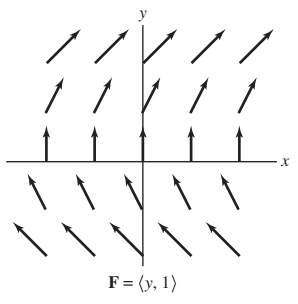
- 02Chapter 6Sketch the vector field \(\nabla f\), where \(f(x,y)=x^2-y\).
Solution to exercise 2
Solution. The gradient of \(f(x,y)=x^2-y\) is \[ \mathbf{F}(x,y) = \left\langle \frac{\partial f}{\partial x}, \frac{\partial f}{\partial y} \right\rangle = \langle 2x, -1 \rangle. \]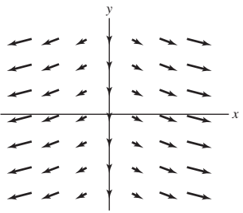
- 03Chapter 6Compute the divergence and the curl of the vector field \(\mathbf{F} = \langle x^3y,\, xz^2,\, y^2z \rangle\).
Solution to exercise 3
Solution. The divergence is \[ \operatorname{div}(\mathbf{F}) = \frac{\partial}{\partial x}(x^3y) + \frac{\partial}{\partial y}(xz^2) + \frac{\partial}{\partial z}(y^2z) = 3x^2y + y^2. \] The curl is \[ \operatorname{curl}(\mathbf{F}) = \nabla \times \mathbf{F} = \begin{vmatrix} \mathbf{i} & \mathbf{j} & \mathbf{k} \\ \frac{\partial}{\partial x} & \frac{\partial}{\partial y} & \frac{\partial}{\partial z} \\ x^3y & xz^2 & y^2z \end{vmatrix} \] \[ = \left(\frac{\partial}{\partial y}(y^2z) - \frac{\partial}{\partial z}(xz^2)\right)\mathbf{i} - \left(\frac{\partial}{\partial x}(y^2z) - \frac{\partial}{\partial z}(x^3y)\right)\mathbf{j} + \left(\frac{\partial}{\partial x}(xz^2) - \frac{\partial}{\partial y}(x^3y)\right)\mathbf{k} \] \[ = (2yz - 2xz)\mathbf{i} + (z^2 - x^3)\mathbf{k}. \] - 04Chapter 6Compute the divergence and the curl of the vector field \(\mathbf{F} = y\mathbf{i} - z\mathbf{k}\).
Solution to exercise 4
Solution. The divergence is \[ \operatorname{div}(\mathbf{F}) = \frac{\partial}{\partial x}(y) + \frac{\partial}{\partial y}(0) + \frac{\partial}{\partial z}(-z) = 0 + 0 - 1 = -1. \] The curl is \[ \operatorname{curl}(\mathbf{F}) = \nabla \times \mathbf{F} = \begin{vmatrix} \mathbf{i} & \mathbf{j} & \mathbf{k} \\ \frac{\partial}{\partial x} & \frac{\partial}{\partial y} & \frac{\partial}{\partial z} \\ y & 0 & -z \end{vmatrix} \] \[ = \left(\frac{\partial}{\partial y}(-z) - \frac{\partial}{\partial z}(0)\right)\mathbf{i} - \left(\frac{\partial}{\partial x}(-z) - \frac{\partial}{\partial z}(y)\right)\mathbf{j} + \left(\frac{\partial}{\partial x}(0) - \frac{\partial}{\partial y}(y)\right)\mathbf{k} \] \[ = 0\mathbf{i} + 0\mathbf{j} - 1\mathbf{k} = -\mathbf{k}. \] - 05Chapter 6Compute the divergence and the curl of the vector field \(\mathbf{F} = \langle e^{x+y}, e^{y+z}, xyz \rangle\).
Solution to exercise 5
Solution. The divergence is \[ \operatorname{div}(\mathbf{F}) = \frac{\partial}{\partial x}(e^{x+y}) + \frac{\partial}{\partial y}(e^{y+z}) + \frac{\partial}{\partial z}(xyz) = e^{x+y} + e^{y+z} + xy. \] The curl is \[ \operatorname{curl}(\mathbf{F}) = \begin{vmatrix} \mathbf{i} & \mathbf{j} & \mathbf{k} \\ \frac{\partial}{\partial x} & \frac{\partial}{\partial y} & \frac{\partial}{\partial z} \\ e^{x+y} & e^{y+z} & xyz \end{vmatrix} \] \[ = \left(\frac{\partial}{\partial y}(xyz) - \frac{\partial}{\partial z}(e^{y+z})\right)\mathbf{i} - \left(\frac{\partial}{\partial x}(xyz) - \frac{\partial}{\partial z}(e^{x+y})\right)\mathbf{j} + \left(\frac{\partial}{\partial x}(e^{y+z}) - \frac{\partial}{\partial y}(e^{x+y})\right)\mathbf{k} \] \[ = (xz - e^{y+z})\mathbf{i} - (yz)\mathbf{j} - e^{x+y}\mathbf{k} = \langle xz - e^{y+z},\, -yz,\, -e^{x+y} \rangle. \] - 06Chapter 6Show that if \(P(x)\), \(Q(y)\), and \(R(z)\) are differentiable functions of one variable, then \[ \operatorname{curl}\!\left(\langle P(x), Q(y), R(z)\rangle\right) = \mathbf{0}. \] Use this to calculate the curl of \[ \mathbf{F}(x,y,z) = \langle x^2+y^2,\; \ln y + z^2,\; z^3\sin(z^2)e^{z^3} \rangle. \]
Solution to exercise 6
Solution. We compute the curl directly: \[ \operatorname{curl}\langle P(x), Q(y), R(z)\rangle = \begin{vmatrix} \mathbf{i} & \mathbf{j} & \mathbf{k} \\ \frac{\partial}{\partial x} & \frac{\partial}{\partial y} & \frac{\partial}{\partial z} \\ P(x) & Q(y) & R(z) \end{vmatrix} \] \[ = \left(\frac{\partial R}{\partial y} - \frac{\partial Q}{\partial z}\right)\mathbf{i} - \left(\frac{\partial R}{\partial x} - \frac{\partial P}{\partial z}\right)\mathbf{j} + \left(\frac{\partial Q}{\partial x} - \frac{\partial P}{\partial y}\right)\mathbf{k}. \] Since \(P\), \(Q\), \(R\) depend only on their respective variables, all cross-partial derivatives are \(0\), so \(\operatorname{curl}\langle P,Q,R\rangle = \mathbf{0}\).
Now we use linearity of the curl: \[ \operatorname{curl}\,\mathbf{F} = \operatorname{curl}\langle x^2+y^2, \ln y+z^2, z^3\sin(z^2)e^{z^3}\rangle \] \[ = \operatorname{curl}\langle x^2, \ln y, z^3\sin(z^2)e^{z^3}\rangle + \operatorname{curl}\langle y^2, z^2, 0\rangle = \mathbf{0} + \operatorname{curl}\langle y^2, z^2, 0\rangle. \] Computing the remaining curl: \[ \operatorname{curl}\langle y^2, z^2, 0\rangle = \begin{vmatrix} \mathbf{i} & \mathbf{j} & \mathbf{k} \\ \frac{\partial}{\partial x} & \frac{\partial}{\partial y} & \frac{\partial}{\partial z} \\ y^2 & z^2 & 0 \end{vmatrix} = \langle -2z, 0, -2y\rangle. \] - 07Chapter 6Give an example of a nonzero vector field \(\mathbf{F}\) such that \(\operatorname{curl}(\mathbf{F}) = \mathbf{0}\) and \(\operatorname{div}(\mathbf{F}) = 0\).
Solution to exercise 7
Solution. Let \(\mathbf{F} = \langle x, -y, 0\rangle\). Then \[ \operatorname{curl}(\mathbf{F}) = \begin{vmatrix} \mathbf{i} & \mathbf{j} & \mathbf{k} \\ \frac{\partial}{\partial x} & \frac{\partial}{\partial y} & \frac{\partial}{\partial z} \\ x & -y & 0 \end{vmatrix} = \left(\frac{\partial}{\partial y}(0) - \frac{\partial}{\partial z}(-y)\right)\mathbf{i} - \left(\frac{\partial}{\partial x}(0) - \frac{\partial}{\partial z}(x)\right)\mathbf{j} + \left(\frac{\partial}{\partial x}(-y) - \frac{\partial}{\partial y}(x)\right)\mathbf{k} = \mathbf{0}. \] \[ \operatorname{div}(\mathbf{F}) = \frac{\partial}{\partial x}(x) + \frac{\partial}{\partial y}(-y) + \frac{\partial}{\partial z}(0) = 1 - 1 + 0 = 0. \] - 08Chapter 6Verify the identity \(\operatorname{div}(\operatorname{curl}\,\mathbf{F}) = 0\) for \(\mathbf{F} = \langle xz, ye^x, yz\rangle\) and \(\mathbf{G} = \langle z^2, xy^3, x^2y\rangle\).
Solution to exercise 8
Solution. For \(\mathbf{F}\): \[ \operatorname{curl}\,\mathbf{F} = \begin{vmatrix} \mathbf{i} & \mathbf{j} & \mathbf{k} \\ \frac{\partial}{\partial x} & \frac{\partial}{\partial y} & \frac{\partial}{\partial z} \\ xz & ye^x & yz \end{vmatrix} = (z-0)\mathbf{i} - (0-x)\mathbf{j} + (ye^x-0)\mathbf{k} = z\mathbf{i} + x\mathbf{j} + ye^x\mathbf{k}. \] \[ \operatorname{div}(\operatorname{curl}\,\mathbf{F}) = \frac{\partial z}{\partial x} + \frac{\partial x}{\partial y} + \frac{\partial(ye^x)}{\partial z} = 0. \] For \(\mathbf{G}\): \[ \operatorname{curl}\,\mathbf{G} = \begin{vmatrix} \mathbf{i} & \mathbf{j} & \mathbf{k} \\ \frac{\partial}{\partial x} & \frac{\partial}{\partial y} & \frac{\partial}{\partial z} \\ z^2 & xy^3 & x^2y \end{vmatrix} = (x^2-0)\mathbf{i} + (2z-2xy)\mathbf{j}+(y^3-0)\mathbf{k} = x^2\mathbf{i} + (2z-2xy)\mathbf{j} + y^3\mathbf{k}. \] \[ \operatorname{div}(\operatorname{curl}\,\mathbf{G}) = \frac{\partial(x^2)}{\partial x} + \frac{\partial(2z-2xy)}{\partial y} + \frac{\partial(y^3)}{\partial z} = 2x + (-2x) + 0 = 0. \]
Conservative fields & potentials
9–12Determine whether each field is conservative, and if so, find a potential function.
- 09Chapter 6\(\mathbf{F}(x,y) = \langle x^2y,\, y^2x \rangle\)
Solution to exercise 9
Solution. Check cross-partials: \[ \frac{\partial P}{\partial y} = \frac{\partial}{\partial y}(x^2y) = x^2, \qquad \frac{\partial Q}{\partial x} = \frac{\partial}{\partial x}(y^2x) = y^2. \] Since \(x^2 \neq y^2\) in general, \(\mathbf{F}\) is not conservative. - 10Chapter 6\(\mathbf{F}(x,y,z) = \langle \sin x,\, e^y,\, z\rangle\)
Solution to exercise 10
Solution. Since \(P = \sin x\), \(Q = e^y\), \(R = z\), all cross-partials are zero and equal, so \(\mathbf{F}\) is conservative. Integrating each component: \[ V = -\cos x + e^y + \tfrac{1}{2}z^2. \] - 11Chapter 6\(\displaystyle\mathbf{F}(x,y,z) = \left\langle xyz,\, \tfrac{1}{2}x^2z,\, 2z^2y\right\rangle\)
Solution to exercise 11
Solution. Check one pair of cross-partials: \[ \frac{\partial P}{\partial z} = \frac{\partial}{\partial z}(xyz) = xy, \qquad \frac{\partial R}{\partial x} = \frac{\partial}{\partial x}(2z^2y) = 0. \] Since \(xy \neq 0\) in general, \(\mathbf{F}\) is not conservative. - 12Chapter 6\(\displaystyle\mathbf{F}(x,y,z) = \left\langle \frac{y}{1+x^2},\, \tan^{-1}x,\, 2z\right\rangle\)
Solution to exercise 12
Solution. All three cross-partial conditions hold: \[ \frac{\partial P}{\partial y} = \frac{1}{1+x^2} = \frac{\partial Q}{\partial x}, \qquad \frac{\partial Q}{\partial z} = 0 = \frac{\partial R}{\partial y}, \qquad \frac{\partial R}{\partial x} = 0 = \frac{\partial P}{\partial z}. \] So \(\mathbf{F}\) is conservative. Integrating: \[ V(x,y,z) = y\tan^{-1}(x) + z^2. \]
Scalar line integrals
13–17In Exercises 13–16, compute the scalar line integral \(\int_C f\,ds\).
- 13Chapter 6\(f(x,y) = xy\), path \(\mathbf{r}(t) = \langle t, 2t-1\rangle\), \(0\le t\le 1\).
Solution to exercise 13
Step 1. \(\mathbf{r}'(t) = \langle 1,2\rangle\), so \(\|\mathbf{r}'(t)\| = \sqrt{5}\). Step 2. \(f(\mathbf{r}(t)) = t(2t-1) = 2t^2-t\). \[ \int_C f\,ds = \int_0^1(2t^2-t)\sqrt{5}\,dt = \sqrt{5}\left[\frac{2}{3}t^3-\frac{1}{2}t^2\right]_0^1 = \sqrt{5}\cdot\frac{1}{6} = \frac{\sqrt{5}}{6}. \] - 14Chapter 6\(f(x,y) = x-y\), the unit semicircle \(x^2+y^2=1\), \(y\ge 0\).
Solution to exercise 14
Parametrize by \(\mathbf{r}(t) = \langle\cos t,\sin t\rangle\), \(0\le t\le\pi\). Then \(\|\mathbf{r}'(t)\| = 1\) and \(f(\mathbf{r}(t)) = \cos t - \sin t\). \[ \int_C f\,ds = \int_0^\pi(\cos t - \sin t)\,dt = \left[\sin t + \cos t\right]_0^\pi = (0-1)-(0+1) = -2. \] - 15Chapter 6\(\displaystyle f(x,y,z) = e^x - \frac{y}{2\sqrt{2}\,z}\), path \(\mathbf{r}(t) = \left\langle\ln t,\,\sqrt{2}\,t,\,\tfrac{1}{2}t^2\right\rangle\), \(1\le t\le 2\).
Solution to exercise 15
Step 1. \[ \mathbf{r}'(t) = \left\langle\frac{1}{t},\sqrt{2},t\right\rangle, \quad \|\mathbf{r}'(t)\| = \sqrt{\frac{1}{t^2}+2+t^2} = \frac{1}{t}+t. \] Step 2. \[ f(\mathbf{r}(t)) = e^{\ln t} - \frac{\sqrt{2}\,t}{2\sqrt{2}\cdot\frac{1}{2}t^2} = t - \frac{1}{t}. \] \[ \int_C f\,ds = \int_1^2\left(t-\frac{1}{t}\right)\left(t+\frac{1}{t}\right)dt = \int_1^2\left(t^2-\frac{1}{t^2}\right)dt = \left[\frac{t^3}{3}+\frac{1}{t}\right]_1^2 = \left(\frac{8}{3}+\frac{1}{2}\right)-\left(\frac{1}{3}+1\right) = \frac{11}{6}. \] - 16Chapter 6\(f(x,y,z) = x+2y+z\), the helix \(\mathbf{r}(t) = \langle\cos t,\sin t,t\rangle\), \(-1\le t\le 3\).
Solution to exercise 16
\(\|\mathbf{r}'(t)\| = \sqrt{\sin^2t+\cos^2t+1} = \sqrt{2}\), and \(f(\mathbf{r}(t)) = \cos t+2\sin t+t\). \[ \int_C f\,ds = \sqrt{2}\int_{-1}^3(\cos t+2\sin t+t)\,dt = \sqrt{2}\left[\sin t - 2\cos t+\frac{t^2}{2}\right]_{-1}^3 \approx 11.375. \] - 17Chapter 6Find the total mass of an L-shaped rod consisting of the segments \(\langle 2t, 2\rangle\) and \(\langle 2, 2-2t\rangle\) for \(0\le t\le 1\) (length in centimeters) with mass density \(\rho(x,y) = x^2y\ \text{g/cm}\).
Solution to exercise 17
Solution. \[M = \int_{AB} x^2y\,ds + \int_{BC} x^2y\,ds.\] Segment \(AB\): \(\mathbf{c}_1(t)=(2t,2)\), \(\|\mathbf{c}_1'\|=2\), \(f=8t^2\). Segment \(BC\): \(\mathbf{c}_2(t)=(2,2-2t)\), \(\|\mathbf{c}_2'\|=2\), \(f=8-8t\). \[ M = \int_0^1 8t^2\cdot 2\,dt + \int_0^1(8-8t)\cdot 2\,dt = \frac{16t^3}{3}\bigg|_0^1 + \left(16t-8t^2\right)\bigg|_0^1 = \frac{16}{3}+8 = \frac{40}{3} \approx 13.\overline{3}\ \text{g}. \]
Vector line integrals & work
18–26- 18Chapter 6Calculate \(\mathbf{F} = \nabla f\) where \(f(x,y,z)=xyze^z\), and compute \(\displaystyle\int_C\mathbf{F}\cdot d\mathbf{r}\) for:
- \(C\) is any curve from \((1,1,0)\) to \((3,e,-1)\).
- \(C\) is the boundary of the square \(0\le x\le 1\), \(0\le y\le 1\), oriented counterclockwise.
Solution to exercise 18
\[ \nabla(xyze^z)=\langle yze^z,xze^z,xy(1+z)e^z\rangle. \]\[ \int_C\nabla f\cdot d\mathbf r=f(3,e,-1)-f(1,1,0)=-3-0=-3. \]For the closed square, the integral is 0.
- 19Chapter 6Calculate \(\displaystyle\int_{C_1} y\,dx + x^2y\,dy\), where \(C_1\) is the oriented curve below (path \(A\to O\to B\to\) arc back to \(A\), where \(O=(0,0)\), \(A=(0,3)\), \(B=(3,0)\)).
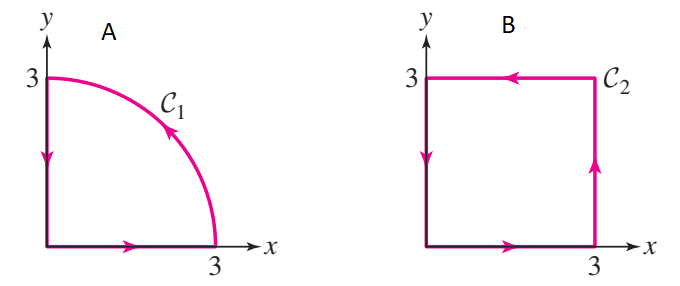
Solution to exercise 19
Solution. \(\mathbf{F} = \langle y, x^2y\rangle\). We split \(C_1 = \overline{AO} + \overline{OB} + \text{arc }BA\).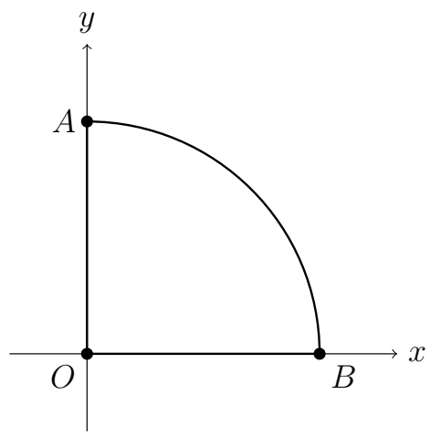
- Segment \(\overline{AO}\): \(\mathbf{r}(t)=(0,-t)\), \(-3\le t\le 0\). \(\mathbf{F}\cdot\mathbf{r}'=0\), so the integral is \(0\).
- Segment \(\overline{OB}\): \(\mathbf{r}(t)=(t,0)\), \(0\le t\le 3\). \(\mathbf{F}=\langle 0,0\rangle\), so the integral is \(0\).
- Arc \(BA\): \(\mathbf{r}(t)=\langle 3\cos t, 3\sin t\rangle\), \(0\le t\le\pi/2\). Then \[ \mathbf{F}\cdot\mathbf{r}' = -9\sin^2t + 81\cos^3t\sin t. \] \[ \int_{\text{arc}} = \int_0^{\pi/2}\left(-9\sin^2t+81\cos^3t\sin t\right)dt = -9\frac\pi4+81\frac14 = \frac{9}{4}(9-\pi). \]
- 20Chapter 6Let \(\mathbf{F}(x,y) = \left(9y-y^3,\; e^{\sqrt{y}}(x^2-3x)\right)\), and let \(C_2\) be the boundary of the square \([0,3]\times[0,3]\), oriented counterclockwise.
- Show that \(\mathbf{F}\) is not conservative.
- Show that \(\displaystyle\int_{C_2}\mathbf{F}\cdot d\mathbf{r} = 0\) without computing the integral explicitly.
Solution to exercise 20
(a) With \(P=9y-y^3\) and \(Q=e^{\sqrt{y}}(x^2-3x)\): \[ \frac{\partial P}{\partial y} = 9-3y^2 \neq e^{\sqrt{y}}(2x-3) = \frac{\partial Q}{\partial x}, \] so \(\mathbf{F}\) is not conservative.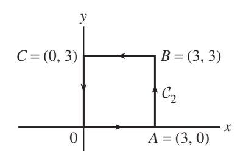
(b) On each side of the square \(\mathbf{F}\) is orthogonal to the path:- \(\overrightarrow{OA}\) (\(y=0\)): \(\mathbf{F}=\langle 0, x^2-3x\rangle\), which is perpendicular to the horizontal direction.
- \(\overrightarrow{AB}\) (\(x=3\)): \(\mathbf{F}=\langle 9y-y^3, 0\rangle\), perpendicular to the vertical direction.
- \(\overrightarrow{BC}\) (\(y=3\)): \(\mathbf{F}=\langle 0, e^{\sqrt{3}}(x^2-3x)\rangle\), perpendicular to the horizontal direction.
- \(\overrightarrow{CO}\) (\(x=0\)): \(\mathbf{F}=\langle 9y-y^3, 0\rangle\), perpendicular to the vertical direction.
Compute the vector line integral \(\int_C\mathbf F\cdot d\mathbf r\) in Exercises 21–24.
- 21Chapter 6\(\displaystyle\mathbf{F}(x,y) = \left\langle\frac{2y}{x^2+4y^2},\;\frac{-x}{x^2+4y^2}\right\rangle\), path \(\mathbf{r}(t)=\left\langle\cos t,\,\tfrac{1}{2}\sin t\right\rangle\), \(0\le t\le 2\pi\).
Solution to exercise 21
\[ \mathbf F(\mathbf r(t))=\langle\sin t,-\cos t\rangle,\qquad\mathbf r'(t)=\langle-\sin t,\tfrac12\cos t\rangle. \]\[ \mathbf F\cdot\mathbf r'=-\sin^2t-\frac12\cos^2t,\qquad\int_C\mathbf F\cdot d\mathbf r=-\pi-\frac\pi2=-\frac{3\pi}{2}. \] - 22Chapter 6\(\mathbf{F}(x,y) = \langle 2xy,\, x^2+y^2\rangle\), the part of the unit circle in the first quadrant oriented counterclockwise.
Solution to exercise 22
Parametrize: \(\mathbf{r}(\theta)=\langle\cos\theta,\sin\theta\rangle\), \(0\le\theta\le\pi/2\). \[ \mathbf{F}\cdot\mathbf{r}' = -2\cos\theta\sin^2\theta+\cos\theta. \] \[ \int_C = \int_0^{\pi/2}(-2\cos\theta\sin^2\theta+\cos\theta)\,d\theta = -2\cdot\frac{\sin^3\theta}{3}\bigg|_0^{\pi/2} + 1 = -\frac{2}{3}+1 = \frac{1}{3}. \] - 23Chapter 6\(\mathbf{F}(x,y,z)=\langle x^2y, y^2z, z^2x\rangle\), path \(\mathbf{r}(t)=\langle e^{-t}, e^{-2t}, e^{-3t}\rangle\), \(0\le t<\infty\).
Solution to exercise 23
\(\mathbf{r}'(t)=\langle -e^{-t},-2e^{-2t},-3e^{-3t}\rangle\) and \(\mathbf{F}(\mathbf{r}(t))=\langle e^{-4t}, e^{-7t}, e^{-7t}\rangle\). \[ \mathbf{F}\cdot\mathbf{r}' = -e^{-5t}-2e^{-9t}-3e^{-10t}. \] \[ \int_C = \int_0^\infty(-e^{-5t}-2e^{-9t}-3e^{-10t})\,dt = -\frac{1}{5}-\frac{2}{9}-\frac{3}{10} = -\frac{13}{18}. \] - 24Chapter 6\(\mathbf{F}=\nabla f\) where \(f(x,y,z)=4x^2\ln(1+y^4+z^2)\), path \(\mathbf{r}(t)=\left\langle t^3,\ln(1+t^2),e^t\right\rangle\), \(0\le t\le 1\).
Solution to exercise 24
By the Fundamental Theorem: \[ \int_C\nabla f\cdot d\mathbf{r} = f(\mathbf{r}(1))-f(\mathbf{r}(0)). \] \(\mathbf{r}(1)=\langle 1,\ln 2, e\rangle\), \(\mathbf{r}(0)=\langle 0,0,1\rangle\). Then \(f(\mathbf{r}(0))=0\) and \[ f(\mathbf{r}(1)) = 4\ln\!\left(1+e^2+(\ln2)^4\right). \] \[ \int_C\mathbf{F}\cdot d\mathbf{r} = 4\ln\!\left(1+e^2+(\ln2)^4\right). \] - 25Chapter 6Consider the line integrals \(\displaystyle\int_C\mathbf{F}\cdot d\mathbf{r}\) for the vector fields and paths shown in the figure. Which two appear to have value zero? Which appears to be negative?
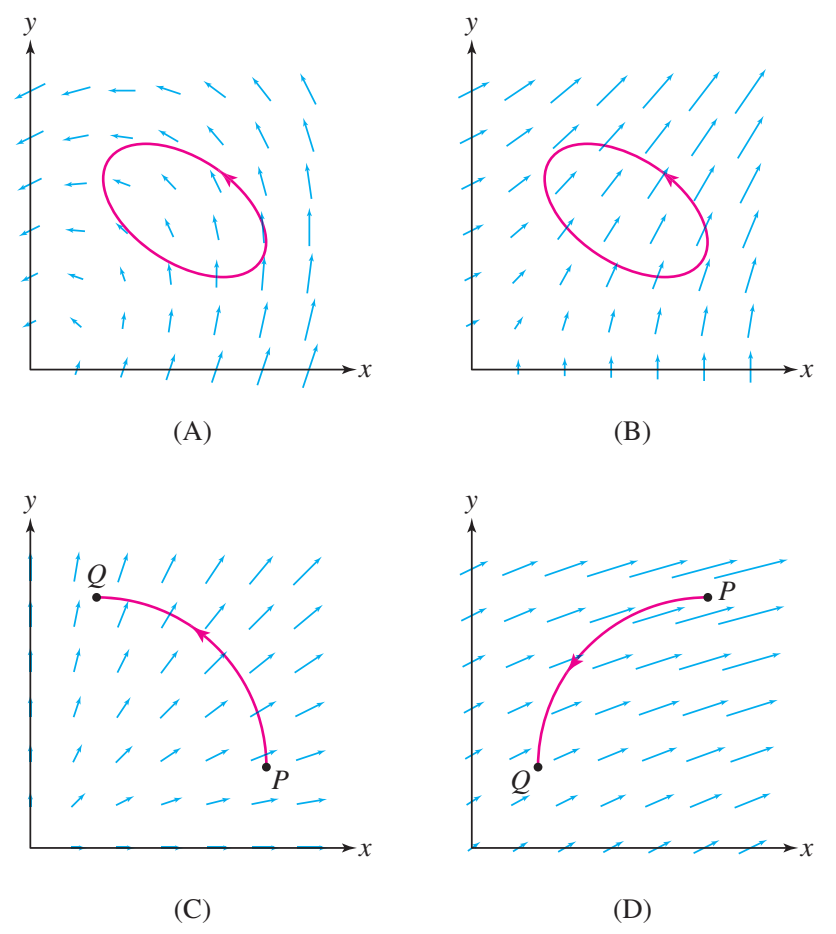
Solution to exercise 25
- (A) Positive — upper part of the ellipse contributes larger positive tangential components than the negative lower part.
- (B) Zero — \(\mathbf{F}\) is nearly orthogonal to the ellipse; the two nonzero tangential contributions cancel.
- (C) Zero — \(\mathbf{F}\) is orthogonal to the path at every point.
- (D) Negative — \(\mathbf{F}\) points opposite to the path direction everywhere.
- 26Chapter 6Calculate the work required to move an object from \(P=(1,1,1)\) to \(Q=(3,-4,-2)\) against the force field \(\mathbf{F}(x,y,z)=-12r^{-4}\langle x,y,z\rangle\) where \(r=\sqrt{x^2+y^2+z^2}\). Hint: Find a potential function.
Solution to exercise 26
Observe that \(\mathbf{F}=\nabla f\) with \(f(x,y,z)=\dfrac{6}{x^2+y^2+z^2}\). Then \[ W = -\int_{\overline{PQ}}\mathbf{F}\cdot d\mathbf{r} = -(f(Q)-f(P)) = -\left(\frac{6}{29}-\frac{6}{3}\right) = \frac{52}{29}\approx 1.79\ \text{N·m}. \]
Surface geometry & integrals
27–31- 27Chapter 6Calculate \(\displaystyle\iint_S e^z\,dS\), where \(S\) is the portion of the plane \(x+2y+2z=3\) with \(x,y,z\ge 0\).
Solution to exercise 27
Write \(z=g(x,y)=\tfrac{3}{2}-\tfrac{x}{2}-y\). Then \(\sqrt{1+g_x^2+g_y^2}=\sqrt{1+\tfrac{1}{4}+1}=\tfrac{3}{2}\). \[ \iint_S e^z\,dS = \frac{3}{2}e^{3/2}\int_0^3\int_0^{(3-x)/2} e^{-x/2}e^{-y}\,dy\,dx = -\frac{15}{2}+3e^{3/2}. \] - 28Chapter 6Let \(S\) be parametrized by \(\mathbf{r}(u,v)=\left\langle 2u\sin\tfrac{v}{2},\,-2u\cos\tfrac{v}{2},\,-3v\right\rangle\), \(0\le u\le 1\), \(0\le v\le 2\pi\).
- Find \(\mathbf{r}_u\), \(\mathbf{r}_v\), and the normal \(\mathbf{n}=\mathbf{r}_u\times\mathbf{r}_v\) at \(P=\mathbf{r}(1,\pi/3)\).
- Find the equation of the tangent plane at \(P\).
- Compute the surface area of \(S\).
Solution to exercise 28
\[ \mathbf r_u=\langle2\sin(v/2),-2\cos(v/2),0\rangle,\quad\mathbf r_v=\langle u\cos(v/2),u\sin(v/2),-3\rangle. \]\[ \mathbf r_u\times\mathbf r_v=\langle6\cos(v/2),6\sin(v/2),2u\rangle. \]\[ P=(1,-\sqrt3,-\pi),\qquad\mathbf n(P)=\langle3\sqrt3,3,2\rangle. \]\[ 3\sqrt3(x-1)+3(y+\sqrt3)+2(z+\pi)=0. \]\[ A=\int_0^{2\pi}\int_0^12\sqrt{9+u^2}\,du\,dv=2\pi\sqrt{10}+18\pi\ln\frac{1+\sqrt{10}}3. \] - 29Chapter 6Evaluate \(\displaystyle\iint_S x^2y\,dS\), where \(S\) is \(z=\sqrt{3}\,x+y^2\), \(-1\le x\le 1\), \(0\le y\le 1\).
Solution to exercise 29
\[ dS=2\sqrt{1+y^2}\,dx\,dy,\qquad I=\left(\int_{-1}^1x^2dx\right)\left(\int_0^12y\sqrt{1+y^2}dy\right). \]\[ I=\frac23\cdot\frac23(2\sqrt2-1)=\frac49(2\sqrt2-1). \] - 30Chapter 6Calculate \(\displaystyle\iint_S(x^2+y^2)e^{-z}\,dS\), where \(S\) is the cylinder \(x^2+y^2=9\), \(0\le z\le 10\). Use \(\mathbf{r}(\theta,z)=\langle 3\cos\theta,3\sin\theta,z\rangle\).
Solution to exercise 30
\(\|\mathbf{r}_\theta\times\mathbf{r}_z\| = 3\). On the surface \(x^2+y^2=9\), so \(f(\mathbf{r}(\theta,z))=9e^{-z}\). \[ \iint_S = \int_0^{10}\int_0^{2\pi}9e^{-z}\cdot 3\,d\theta\,dz = 54\pi(1-e^{-10})\approx 54\pi. \] - 31Chapter 6Let \(S\) be the upper hemisphere \(x^2+y^2+z^2=1\), \(z\ge 0\). Determine whether \(\displaystyle\iint_S f\,dS\) is positive, zero, or negative (without computing) for each of the following:
- \(f(x,y,z)=y^3\)
- \(f(x,y,z)=z^3\)
- \(f(x,y,z)=xy^2\)
- \(f(x,y,z)=z^2-2\)
Solution to exercise 31
- Zero — \(y^3\) is odd in \(y\); the hemisphere is symmetric about the \(xz\)-plane.
- Positive — \(z^3\ge 0\) on the upper hemisphere.
- Zero — \(f(-x,y,z)=-f(x,y,z)\); symmetric about the \(yz\)-plane.
- Negative — on \(S\), \(z^2=1-x^2-y^2\le 1\), so \(z^2-2<0\).
Flux through surfaces
32–38Compute the flux \(\iint_S\mathbf F\cdot d\mathbf S\), using the specified orientation.
- 32Chapter 6\(\mathbf{F}(x,y,z)=\langle y, x, e^{xz}\rangle\), on \(x^2+y^2=9\), \(x\ge 0\), \(y\ge 0\), \(-3\le z\le 3\), outward normal. Use \(\mathbf{r}(\theta,z)=\langle 3\cos\theta,3\sin\theta,z\rangle\), \(0\le\theta\le\pi/2\).
Solution to exercise 32
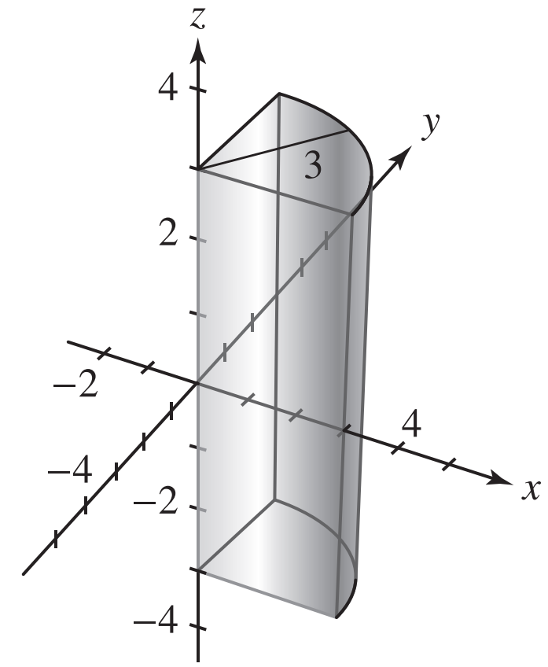
\(\mathbf{r}_\theta\times\mathbf{r}_z=\langle 3\cos\theta,3\sin\theta,0\rangle\) (outward). \[ \mathbf{F}(\mathbf{r}(\theta,z))\cdot(\mathbf{r}_\theta\times\mathbf{r}_z) = 9\sin\theta\cos\theta + 9\sin\theta\cos\theta = 18\sin\theta\cos\theta. \] \[ \iint_S\mathbf{F}\cdot d\mathbf{S} = \int_0^{\pi/2}\int_{-3}^3 18\sin\theta\cos\theta\,dz\,d\theta = \int_0^{\pi/2}108\sin\theta\cos\theta\,d\theta = 54. \] - 33Chapter 6\(\mathbf{F}(x,y,z)=\langle -y,z,-x\rangle\), \(\mathbf{r}(u,v)=\langle u+3v,\,u-2v,\,2v+5\rangle\), \(0\le u,v\le 1\), upward normal.
Solution to exercise 33
\[ \mathbf r_u=\langle1,1,0\rangle,\qquad\mathbf r_v=\langle3,-2,2\rangle. \]Their cross product points downward, so use \(\mathbf n=\mathbf r_v\times\mathbf r_u=\langle-2,2,5\rangle\).
\[ \mathbf F(\mathbf r)=\langle-u+2v,2v+5,-u-3v\rangle,\qquad\mathbf F\cdot\mathbf n=-3u-15v+10. \]\[ \iint_S\mathbf F\cdot d\mathbf S=\int_0^1\int_0^1(-3u-15v+10)du\,dv=1. \] - 34Chapter 6\(\mathbf{F}(x,y,z)=\langle 0,0,x^2+y^2\rangle\), upper hemisphere \(x^2+y^2+z^2=4\), \(z\ge 0\), outward normal.
Solution to exercise 34
Write \(z=\sqrt{4-x^2-y^2}\); the formula gives \(\iint_S\mathbf{F}\cdot d\mathbf{S}=\iint_D(x^2+y^2)\,dA\) over the disk \(x^2+y^2\le 4\). \[ \iint_D(x^2+y^2)\,dA = \int_0^{2\pi}\int_0^2 r^2\cdot r\,dr\,d\theta = 2\pi\cdot 4 = 8\pi. \] - 35Chapter 6\(\mathbf{F}(x,y,z)=\langle z,0,z^2\rangle\), \(\mathbf{r}(u,v)=\langle v\cosh u,\,v\sinh u,\,v\rangle\), \(0\le u,v\le 1\), upward normal.
Recall: \(\sinh x = \tfrac{e^x-e^{-x}}{2}\), \(\cosh x=\tfrac{e^x+e^{-x}}{2}\), \(\cosh^2-\sinh^2=1\).Solution to exercise 35
\(\mathbf{r}_u=\langle v\sinh u,v\cosh u,0\rangle\), \(\mathbf{r}_v=\langle\cosh u,\sinh u,1\rangle\). \[ \mathbf{r}_u\times\mathbf{r}_v = \langle v\cosh u,-v\sinh u,-v\rangle. \] Since the upward normal needs positive \(z\)-component: \(\mathbf{n}=\langle -v\cosh u,v\sinh u,v\rangle\). \[ \mathbf{F}(\mathbf{r}(u,v))=\langle v,0,v^2\rangle. \] \[ \mathbf{F}\cdot\mathbf{n} = -v^2\cosh u+v^3. \] \[ \iint_S = \int_0^1\int_0^1(-v^2\cosh u+v^3)\,du\,dv = -\frac{\sinh 1}{3}+\frac{1}{4}\approx -0.1417. \] - 36Chapter 6\(\mathbf{F}(x,y,z)=\langle 0,0,xze^{xy}\rangle\), \(z=xy\), \(0\le x,y\le 1\), upward normal.
Solution to exercise 36
Parametrize by \(\mathbf{r}(x,y)=\langle x,y,xy\rangle\). Then \(\mathbf{r}_x\times\mathbf{r}_y=\langle -y,-x,1\rangle\) (upward). \[ \mathbf{F}(\mathbf{r}(x,y))=\langle 0,0,x^2ye^{xy}\rangle, \quad \mathbf{F}\cdot\mathbf{n} = x^2ye^{xy}. \] \[ \iint_S = \int_0^1\int_0^1 x^2ye^{xy}\,dy\,dx = 3-e. \] - 37Chapter 6\(\mathbf{F}(x,y,z)=\langle 0,0,z\rangle\), on the ellipsoid \(3x^2+2y^2+z^2=1\), \(z\ge 0\), upward normal. Use the parametrization \(x=\tfrac{1}{\sqrt{3}}\sin\phi\cos\theta\), \(y=\tfrac{1}{\sqrt{2}}\sin\phi\sin\theta\), \(z=\cos\phi\).
Solution to exercise 37
After computing \(\mathbf{r}_\theta\times\mathbf{r}_\phi\) and taking the upward-pointing normal: \[ \mathbf{F}\cdot\mathbf{n} = \frac{1}{\sqrt{6}}\sin\phi\cos^2\phi. \] \[ \iint_S = \int_0^{2\pi}\int_0^{\pi/2}\frac{1}{\sqrt{6}}\sin\phi\cos^2\phi\,d\phi\,d\theta = \frac{2\pi}{\sqrt{6}}\cdot\frac{1}{3} = \frac{\sqrt{2}\,\pi}{3\sqrt{3}}. \] - 38Chapter 6Calculate the flux of \(\mathbf{E}(x,y,z)=\langle 0,0,x\rangle\) through the part of the ellipsoid \(4x^2+9y^2+z^2=36\) where \(z\ge 3\), \(x>0\), \(y>0\). Use the parametrization \(\mathbf{q}(r,\theta)=\langle 3r\cos\theta,2r\sin\theta,6\sqrt{1-r^2}\rangle\).
Solution to exercise 38
The condition \(z\ge 3\) gives \(0\le r\le\sqrt{3}/2\). After computing the outward normal and dot product: \[ \mathbf{E}(\mathbf{q}(\theta,r))\cdot\mathbf{n} = 18r^2\cos\theta. \] \[ \iint_S\mathbf{E}\cdot d\mathbf{S} = \int_0^{\sqrt{3}/2}\int_0^{\pi/2} 18r^2\cos\theta\,d\theta\,dr. \] Since \(\int_0^{\pi/2}\cos\theta\,d\theta = 1\): \[ = \int_0^{\sqrt{3}/2}18r^2\,dr = 6r^3\bigg|_0^{\sqrt{3}/2} = 6\cdot\frac{3\sqrt{3}}{8} = \frac{9\sqrt{3}}{4}. \] (Note: if the domain were \(0\le\theta\le 2\pi\), the cosine integral over a full period gives \(0\). The problem restricts to \(x>0\), \(y>0\), i.e., \(0\le\theta\le\pi/2\).)
Green’s Theorem
39–44- 39Chapter 6Let \(\mathbf{F}(x,y)=\langle x+y^2,\,x^2-y\rangle\) and \(C\) be the unit circle oriented counterclockwise. Evaluate \(\oint_C\mathbf{F}\cdot d\mathbf{r}\) directly and using Green's Theorem.
Solution to exercise 39
Direct calculation: Parametrize by \(\mathbf{r}(t)=(\cos t,\sin t)\). The integrand \(\mathbf{F}\cdot\mathbf{r}' = \cos^3t-\sin^3t-2\sin t\cos t\), and integrating over \([0,2\pi]\) gives \(0\). Green's Theorem: \[ \frac{\partial Q}{\partial x}-\frac{\partial P}{\partial y} = 2x-2y. \]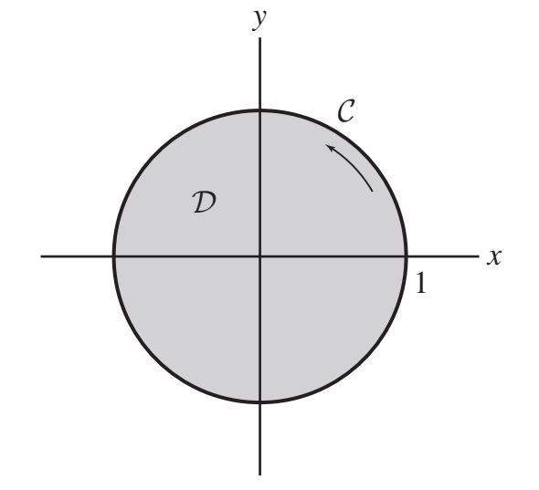
\[ \iint_D(2x-2y)\,dA = \int_0^{2\pi}\int_0^1 2r^2(\cos\theta-\sin\theta)\,dr\,d\theta = \frac{2}{3}\cdot 0 = 0. \] - 40Chapter 6Let \(\partial R\) be the boundary of the rectangle, and \(\partial R_1\), \(\partial R_2\) the boundaries of two triangles (all counterclockwise).
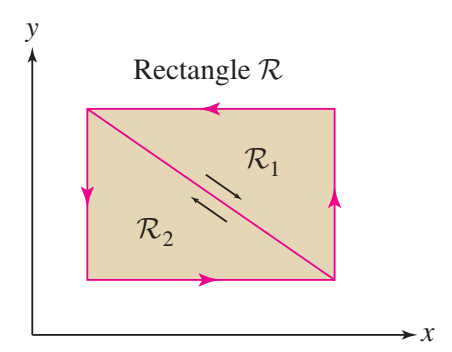
- Find \(\displaystyle\oint_{\partial R_1}\mathbf{F}\cdot d\mathbf{r}\) if \(\displaystyle\oint_{\partial R}\mathbf{F}\cdot d\mathbf{r}=4\) and \(\displaystyle\oint_{\partial R_2}\mathbf{F}\cdot d\mathbf{r}=-2\).
- What is \(\displaystyle\oint_{\partial R}\mathbf{F}\cdot d\mathbf{r}\) if \(\partial R\) is oriented clockwise?
Solution to exercise 40
(a) The diagonal \(\overline{DB}\) is traversed in opposite directions by \(\partial R_1\) and \(\partial R_2\), so their contributions cancel: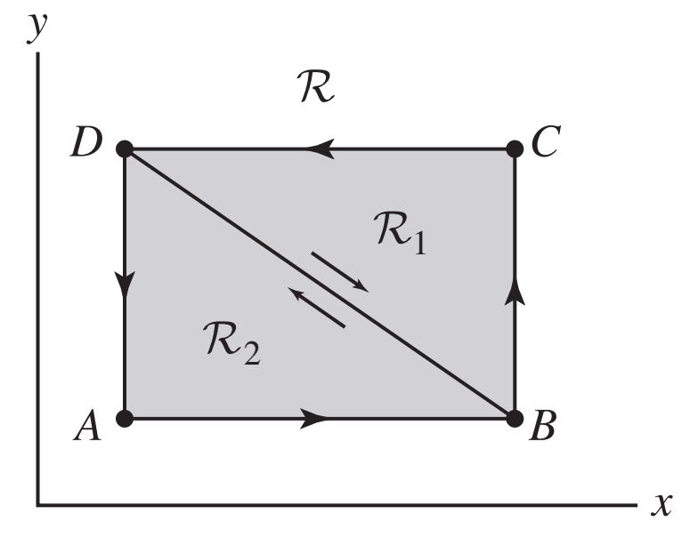
\[ \oint_{\partial R} = \oint_{\partial R_1} + \oint_{\partial R_2} \implies 4 = \oint_{\partial R_1} - 2 \implies \oint_{\partial R_1} = 6. \] (b) Reversing orientation negates the integral: \(\oint_{\partial R,\text{cw}} = -4\).
Use Green’s Theorem to evaluate each line integral. Observe the orientation stated in the question.
- 41Chapter 6\(\displaystyle\oint_C xy^3\,dx + x^3y\,dy\), where \(C\) is the rectangle \(-1\le x\le 2\), \(-2\le y\le 3\), counterclockwise.
Solution to exercise 41
\(\dfrac{\partial Q}{\partial x}-\dfrac{\partial P}{\partial y} = 3x^2y-3xy^2\).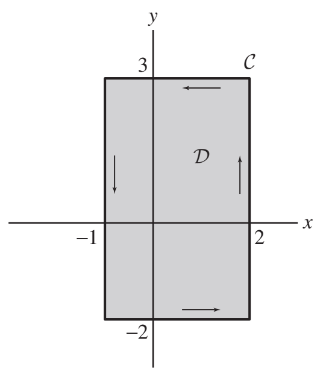
\[ \int_{-2}^3\int_{-1}^2(3x^2y-3xy^2)\,dx\,dy = \int_{-2}^3\left(-\frac{9y^2}{2}+9y\right)dy = \left[-\frac{3y^3}{2}+\frac{9y^2}{2}\right]_{-2}^3 = 0 - 30 = -30. \] - 42Chapter 6\(\displaystyle\oint_C(3x+5y-\cos y)\,dx + x\sin y\,dy\), where \(C\) is any closed curve enclosing a region of area 4, counterclockwise.
Solution to exercise 42
\(\dfrac{\partial Q}{\partial x}-\dfrac{\partial P}{\partial y} = \sin y-(5+\sin y) = -5\). \[ \iint_D(-5)\,dA = -5\cdot 4 = -20. \] - 43Chapter 6\(\displaystyle\oint_C y^2\,dx - x^2\,dy\), where \(C\) consists of arcs \(y=x^2\) and \(y=\sqrt{x}\), \(0\le x\le 1\), oriented clockwise.
Solution to exercise 43
\(\dfrac{\partial Q}{\partial x}-\dfrac{\partial P}{\partial y} = -2x-2y\). Since \(C\) is clockwise: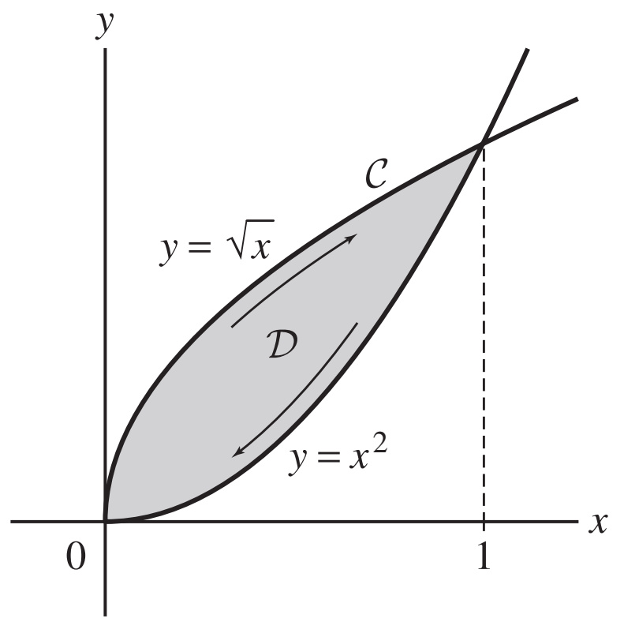
\[ \int_C = -\iint_D(-2x-2y)\,dA = \int_0^1\int_{x^2}^{\sqrt{x}}(2x+2y)\,dy\,dx = \frac{3}{5}. \] - 44Chapter 6\(\displaystyle\oint_C ye^x\,dx + xe^y\,dy\), where \(C\) is the triangle with vertices \((-1,0)\), \((0,4)\), \((0,1)\), counterclockwise.
Solution to exercise 44
\(\dfrac{\partial Q}{\partial x}-\dfrac{\partial P}{\partial y} = e^y-e^x\).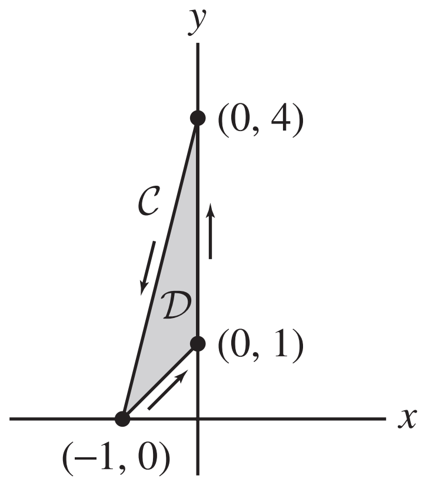
The triangle has edges: \(y=x+1\) (from \((-1,0)\) to \((0,1)\)), \(y=4x+4\) (from \((-1,0)\) to \((0,4)\)), and the \(y\)-axis segment from \((0,1)\) to \((0,4)\). \[ \iint_D(e^y-e^x)\,dA = \int_{-1}^0\int_{x+1}^{4x+4}(e^y-e^x)\,dy\,dx = \frac{e^4}{4}-e+\frac{3}{4}-3e^{-1}\approx 10.58. \]
Area from line integrals
45–49- 45Chapter 6Let \(\mathbf{r}(t)=\langle t^2(1-t),\, t(t-1)^2\rangle\).
- Describe/plot the path for \(0\le t\le 1\).
- Calculate the area enclosed using \(A=\tfrac{1}{2}\oint_C(x\,dy-y\,dx)\).
Solution to exercise 45
(a) The path is a closed loop traced clockwise as \(t\) goes from 0 to 1.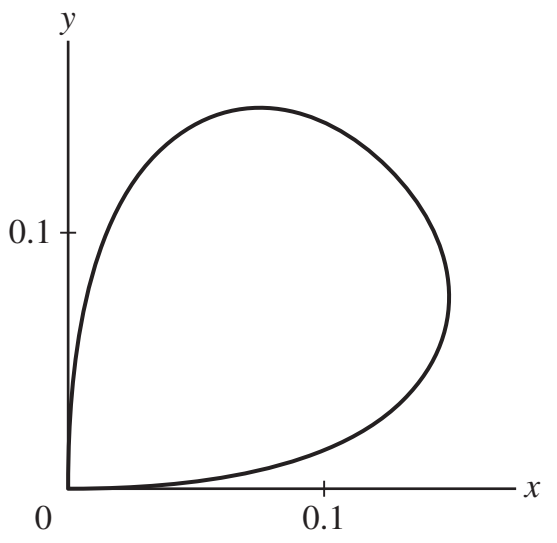
(b) \(x\,dy-y\,dx = -t^2(t-1)^2\,dt\). The path is clockwise, so: \[ A = \frac{1}{2}\int_1^0 -t^2(t-1)^2\,dt = \frac{1}{2}\int_0^1(t^4-2t^3+t^2)\,dt = \frac{1}{2}\left(\frac{1}{5}-\frac{1}{2}+\frac{1}{3}\right) = \frac{1}{60}. \] - 46Chapter 6Calculate the area bounded by \(y=x^2\) and \(y=4\) using \(A=\oint_C x\,dy\).
Solution to exercise 46
Orient counterclockwise: \(C_1:(t,t^2)\) from \(-2\) to \(2\); \(C_2:(-t,4)\) from \(-2\) to \(2\). \[ A = \int_{-2}^2 t\cdot 2t\,dt + 0 = \int_{-2}^2 2t^2\,dt = \frac{32}{3}. \] - 47Chapter 6Calculate the area bounded by \(y=x^2\) and \(y=\sqrt{x}\), \(x\ge 0\), using \(A=\oint_C x\,dy\).
Solution to exercise 47
\(C_1:(t,t^2)\), \(0\le t\le 1\); \(C_2:((1-t)^2,1-t)\), \(0\le t\le 1\). \[ A = \int_0^1 t\cdot 2t\,dt + \int_0^1(1-t)^2\cdot(-1)\,dt = \frac{2}{3}-\frac{1}{3} = \frac{1}{3}. \] - 48Chapter 6Calculate the area bounded by \(y=x^2\) and \(y=4\) using \(A=\oint_C -y\,dx\).
Solution to exercise 48
Same parametrization as Problem 46: \[ A = -\int_{-2}^2 t^2\,dt + 4\int_{-2}^2 1\,dt = -\frac{16}{3}+16 = \frac{32}{3}. \] - 49Chapter 6Calculate the area bounded by \(y=x^2\) and \(y=\sqrt{x}\), \(x\ge 0\), using \(A=\oint_C -y\,dx\).
Solution to exercise 49
\[ A = -\int_0^1 t^2\,dt + \int_0^1(1-t)\cdot 2(1-t)\,dt = -\frac{1}{3}+\frac{2}{3} = \frac{1}{3}. \]
Identities & planar flux
50–54- 50Chapter 6In (a)–(d), state whether the equation is an identity. If not, give a counterexample.
- \(\operatorname{curl}(\nabla f) = \mathbf{0}\)
- \(\operatorname{div}(\nabla f) = 0\)
- \(\operatorname{div}(\operatorname{curl}(\mathbf{F})) = 0\)
- \(\nabla(\operatorname{div}(\mathbf{F})) = \mathbf{0}\)
Solution to exercise 50
- Identity. By equality of mixed partials, all components of \(\operatorname{curl}(\nabla f)\) are zero.
- Not an identity. Take \(f=x^2+y+z\); then \(\operatorname{div}(\nabla f)=2\neq 0\).
- Identity. By equality of mixed partials, the terms cancel pairwise.
- Not an identity. Take \(\mathbf{F}=\langle x^2,y,z\rangle\); then \(\nabla(\operatorname{div}\mathbf{F})=\langle 2,0,0\rangle\neq\mathbf{0}\).
- 51Chapter 6Let \(\mathbf{F}(x,y)=\langle x^2y,\,xy^2\rangle\). Find all points where the angular velocity of a paddle wheel is zero (i.e., where \(\operatorname{curl}(\mathbf{F})=\mathbf{0}\)).
Solution to exercise 51
\[ \operatorname{curl}(\mathbf{F}) = \langle 0,0,y^2-x^2\rangle. \] This vanishes when \(y^2=x^2\), i.e., along the lines \(y=x\) and \(y=-x\). - 52Chapter 6Compute the flux \(\displaystyle\oint_{\partial D}\mathbf{F}\cdot\mathbf{N}\,ds\) of \(\mathbf{F}(x,y)=\langle x^3,\,yx^2\rangle\) across the unit square \(D\) using \(\displaystyle\oint_{\partial D}\mathbf{F}\cdot\mathbf{N}\,ds = \iint_D\operatorname{div}\mathbf{F}\,dA\).
Solution to exercise 52
\(\operatorname{div}\mathbf{F} = 3x^2+x^2 = 4x^2\). \[ \iint_D 4x^2\,dA = \int_0^1\int_0^1 4x^2\,dy\,dx = \int_0^1 4x^2\,dx = \frac{4}{3}. \] - 53Chapter 6Compute the flux \(\displaystyle\oint_{\partial D}\mathbf{F}\cdot\mathbf{N}\,ds\) of \(\mathbf{F}(x,y)=\langle x^3+2x,\,x^3+y\rangle\) across the circle \(x^2+y^2=4\).
Solution to exercise 53
\[ \operatorname{div}\mathbf F=\frac{\partial}{\partial x}(x^3+2x)+\frac{\partial}{\partial y}(x^3+y)=3x^2+3. \]\[ \oint_{\partial D}\mathbf F\cdot\mathbf N\,ds=3\iint_Dx^2dA+3\operatorname{Area}(D)=3(4\pi)+3(4\pi)=24\pi. \] - 54Chapter 6Suppose \(\displaystyle\oint_{C_2}\mathbf{F}\cdot d\mathbf{r}=12\). Use Green's Theorem to find \(\displaystyle\oint_{C_1}\mathbf{F}\cdot d\mathbf{r}\), given \(\dfrac{\partial Q}{\partial x}-\dfrac{\partial P}{\partial y}=-3\) in \(D\), where \(D\) is a \(6\times 10\) rectangle with a circular hole of radius 2 (\(C_2\) is the inner circle, \(C_1\) the outer rectangle).
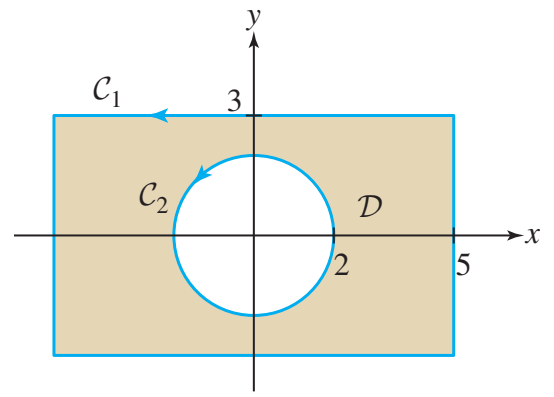
Solution to exercise 54
By Green's Theorem: \[ \int_{C_1}\mathbf{F}\cdot d\mathbf{r} - \int_{C_2}\mathbf{F}\cdot d\mathbf{r} = \iint_D(-3)\,dA = -3\,\text{Area}(D). \] \[ \text{Area}(D) = 6\cdot 10 - \pi(2)^2 = 60-4\pi. \] \[ \int_{C_1}\mathbf{F}\cdot d\mathbf{r} = 12 - 3(60-4\pi) = 12\pi - 168 \approx -130.3. \]This sign convention takes both curves counterclockwise. The positively oriented boundary of the region with a hole traverses the inner circle clockwise.
Stokes’ Theorem
55–57- 55Chapter 6Verify Stokes' Theorem for \(\mathbf{F}=\langle yz,0,x\rangle\) and the surface \(S\): portion of \(\tfrac{x}{2}+\tfrac{y}{3}+z=1\) with \(x,y,z\ge 0\), upward normal.
Solution to exercise 55
Step 1. Boundary curve \(C = C_1\cup C_2\cup C_3\):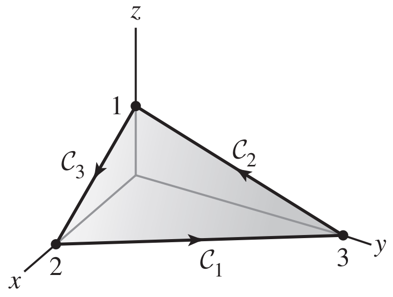
\[ C_1:\mathbf{r}_1(t)=(2-2t,3t,0),\quad C_2:\mathbf{r}_2(t)=(0,3-3t,t),\quad C_3:\mathbf{r}_3(t)=(2t,0,1-t),\quad 0\le t\le 1. \] Computing each dot product: \(\mathbf{F}\cdot\mathbf{r}_1'=0\), \(\mathbf{F}\cdot\mathbf{r}_2'=0\), \(\mathbf{F}\cdot\mathbf{r}_3'=-2t\). \[ \int_C\mathbf{F}\cdot d\mathbf{r} = \int_0^1(-2t)\,dt = -1. \tag{1}\label{exam4-equation-1} \] Step 2. \[ \operatorname{curl}(\mathbf{F}) = \langle 0, y-1, -z\rangle. \] Step 3. Parametrize \(S\) by \(\mathbf{r}(x,y)=\langle x,y,1-\tfrac{x}{2}-\tfrac{y}{3}\rangle\).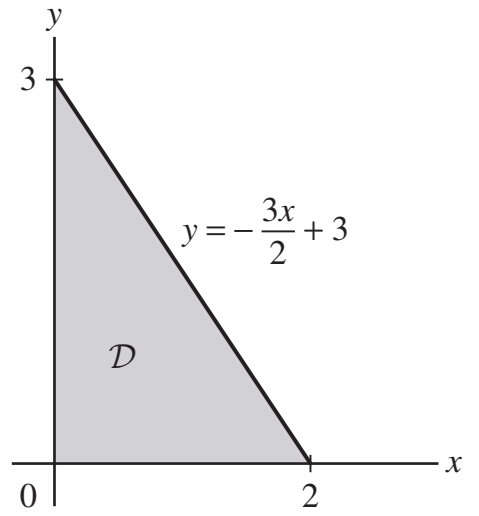
Normal: \(\mathbf{n}=\langle\tfrac{1}{2},\tfrac{1}{3},1\rangle\). \[ \operatorname{curl}(\mathbf{F})\cdot\mathbf{n} = \frac{x}{2}+\frac{2y}{3}-\frac{4}{3}. \] \[ \iint_S\operatorname{curl}(\mathbf{F})\cdot d\mathbf{S} = \int_0^2\int_0^{-3x/2+3}\left(\frac{x}{2}+\frac{2y}{3}-\frac{4}{3}\right)dy\,dx = -1. \tag{2}\label{exam4-equation-2} \] Equations (1) and (2) agree. ✓ - 56Chapter 6Let \(\mathbf{F}=\langle 3z,5x,-2y\rangle\) and \(S\) be the paraboloid \(z=x^2+y^2\), \(z\le 4\), upward normal. Calculate \(\operatorname{curl}\mathbf{F}\) and use Stokes' Theorem to compute \(\displaystyle\iint_S\operatorname{curl}\mathbf{F}\cdot d\mathbf{S}\) as a line integral.
Solution to exercise 56
\[ \operatorname{curl}(\mathbf{F}) = \langle -2, 3, 5\rangle. \] The boundary is the circle \(x^2+y^2=4\), \(z=4\), counterclockwise. Parametrize: \(\mathbf{r}(t)=\langle 2\cos t,2\sin t,4\rangle\). \[ \mathbf{F}(\mathbf{r}(t))\cdot\mathbf{r}'(t) = \langle 12,10\cos t,-4\sin t\rangle\cdot\langle -2\sin t,2\cos t,0\rangle = -24\sin t+20\cos^2t. \] \[ \int_C\mathbf{F}\cdot d\mathbf{r} = \int_0^{2\pi}(-24\sin t+10+10\cos 2t)\,dt = 20\pi. \] - 57Chapter 6Let \(\mathbf{F}=\langle yz,xy,xz\rangle\) and \(C\) be the square with vertices \((0,0,2)\), \((1,0,2)\), \((1,1,2)\), \((0,1,2)\), counterclockwise from above. Apply Stokes' Theorem.
Solution to exercise 57
Take \(S\) to be the interior square, parametrized by \(\mathbf{r}(x,y)=\langle x,y,2\rangle\). Normal: \(\mathbf{r}_x\times\mathbf{r}_y=\langle 0,0,1\rangle\) (upward). \[ \operatorname{curl}(\mathbf{F}) = \langle 0, y-z, y-z\rangle. \] At \(z=2\): \(\operatorname{curl}(\mathbf{F})=\langle 0,y-2,y-2\rangle\). \[ \operatorname{curl}(\mathbf{F})\cdot\langle 0,0,1\rangle = y-2. \] \[ \iint_S = \int_0^1\int_0^1(y-2)\,dy\,dx = \frac{1}{2}-2 = -\frac{3}{2}. \]
Divergence Theorem
58–62- 58Chapter 6
\(\mathbf F=\langle xy,yz,x^2z+z^2\rangle\). Use the Divergence Theorem to calculate the outward flux across the boundary of \([0,1]\times[2,4]\times[1,5]\).
Solution to exercise 58
\[ \operatorname{div}\mathbf F=x^2+y+3z. \]\[ \iint_S\mathbf F\cdot d\mathbf S=\int_1^5\int_2^4\int_0^1(x^2+y+3z)dx\,dy\,dz=\frac{296}{3}. \] - 59Chapter 6
\(\mathbf F=\langle xy,yz,x^2z+z^2\rangle\). Use the Divergence Theorem to calculate the outward flux across the unit sphere.
Solution to exercise 59
\[ \operatorname{div}\mathbf F=x^2+y+3z. \]The odd terms integrate to zero over the unit ball. By symmetry,
\[ \iint_S\mathbf F\cdot d\mathbf S=\iiint_Bx^2dV=\frac13\iiint_Br^2dV=\frac13\cdot4\pi\int_0^1r^4dr=\frac{4\pi}{15}. \] - 60Chapter 6
\(\mathbf F=\langle xyz+xy,\tfrac12y^2(1-z)+e^x,e^{x^2+y^2}\rangle\). Use the Divergence Theorem to find the outward flux across the boundary of the solid bounded by \(x^2+y^2=16\), \(z=0\), and \(z=y-4\).
Solution to exercise 60
\[ \operatorname{div}\mathbf F=yz+y+y(1-z)=2y. \]\[ \iint_S\mathbf F\cdot d\mathbf S=\iint_{x^2+y^2\le16}\int_{y-4}^02y\,dz\,dA=\iint_D(8y-2y^2)dA=-128\pi. \] - 61Chapter 6
\(\mathbf F=\langle\sin(yz),\sqrt{x^2+z^4},x\cos(x-y)\rangle\). Find the outward flux across any smooth closed surface bounding a region in \(\mathbb R^3\).
Solution to exercise 61
\[ \operatorname{div}\mathbf F=0+0+0=0,\qquad\iint_S\mathbf F\cdot d\mathbf S=0. \]The second component is not continuously differentiable everywhere. For a direct justification, replace it by \(\sqrt{x^2+z^4+\varepsilon^2}\). Each smooth approximation has zero divergence and zero flux; uniform convergence on the compact surface gives the same flux as \(\varepsilon\to0\).
- 62Chapter 6
Find the volume of \(E\) if the outward flux satisfies \[\iint_{\partial E}\langle x+xy+z,x+3y-\tfrac12y^2,4z\rangle\cdot d\mathbf S=16.\]
Solution to exercise 62
\[ \operatorname{div}\mathbf F=(1+y)+(3-y)+4=8. \]\[ 16=\iiint_E8\,dV=8\operatorname{Volume}(E),\qquad\boxed{\operatorname{Volume}(E)=2}. \]